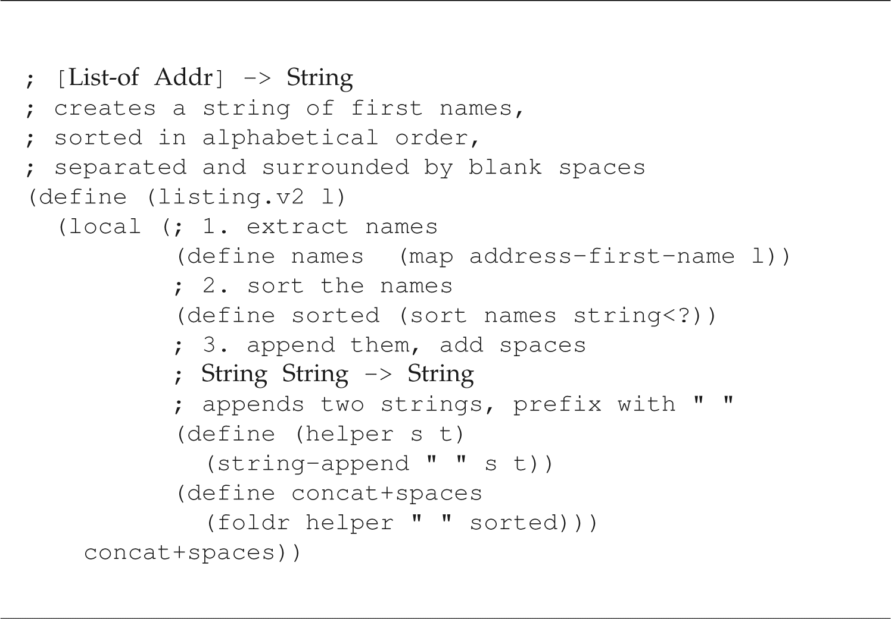
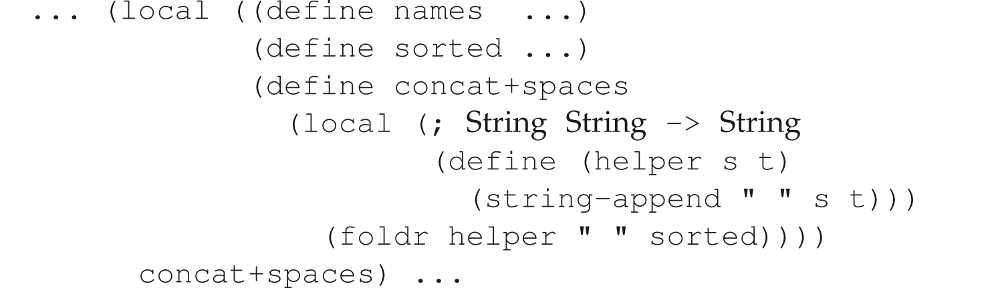
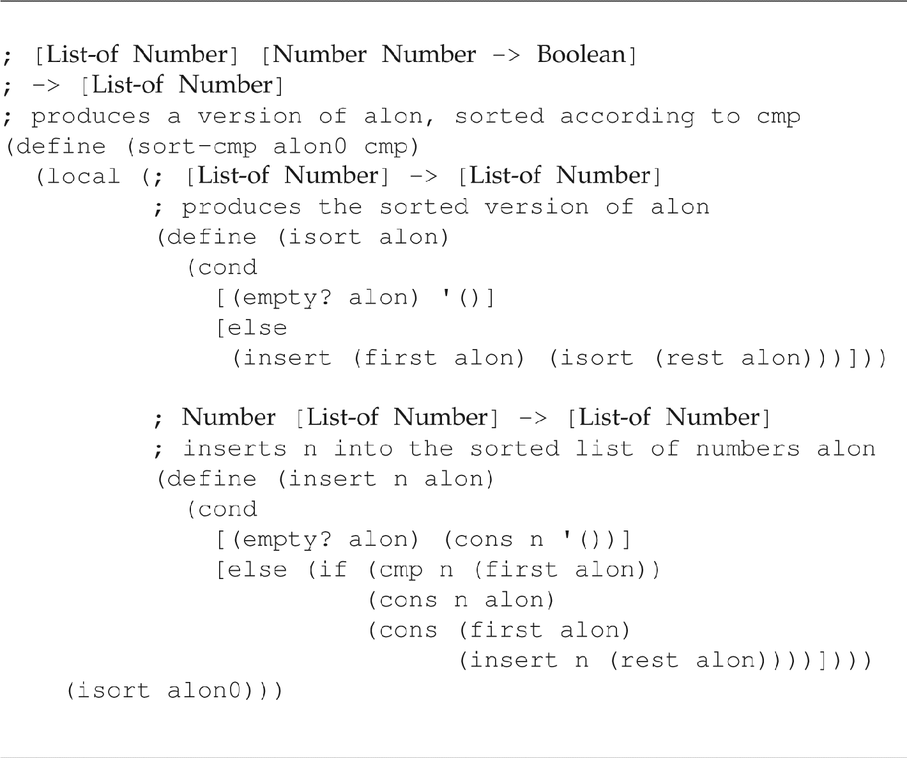
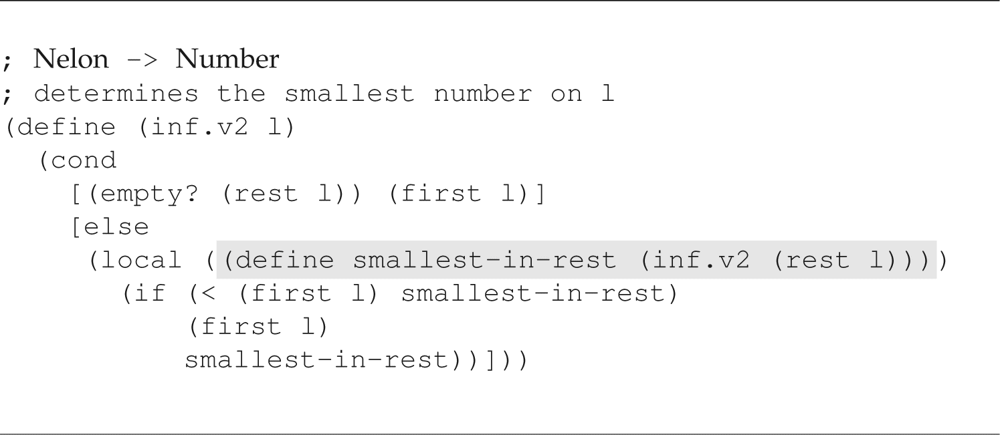
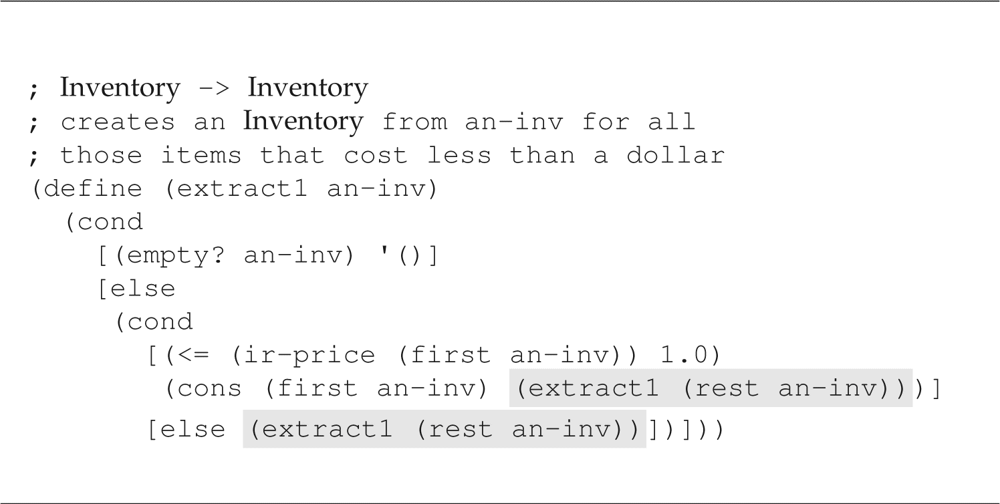

16.2 Local Definitions
Let’s take a second look at figure 97. The string-append-with-space function clearly plays a subordinate role and has no use outside of this narrow context. Furthermore, the organization of the function body does not reflect the three tasks identified above.
Almost all programming languages support some way for stating these kinds of relationships as a part of a program. The idea is called a local definition, also called a private definition. In ISL, local expressions introduce locally defined functions, variables, and structure types.
This section introduces the mechanics of local. In general, a local expression has this shape:
(local (def …)
; --- IN ---
body-expression)
The evaluation of such an expression proceeds like the evaluation of a complete program. First, the definitions are set up, which may involve the evaluation of the right-hand side of a constant definition. Just as with the top-level definitions that you know and love, the definitions in a local expression may refer to each other. They may also refer to parameters of the surrounding function. Second, the body-expression is evaluated and it becomes the result of the local expression. It is often helpful to separate the local defs from the body-expression with a comment; as indicated, we may use –- IN –- because the word suggests that the definitions are available in a certain expression.
Figure 98 shows a revision of figure 97 using local. The body of the listing.v2 function is now a local expression, which consists of two pieces: a sequence of definitions and a body expression. The sequence of local definitions looks exactly like a sequence in DrRacket’s definitions area.

Figure 98: Organizing a function with local
In this example, the sequence of definitions consists of four pieces: three constant definitions and a single function definition. Each constant definition represents one of the three planning tasks. The function definition is a renamed version of string-append-with-space; it is used with foldr to implement the third task. The body of local is just the name of the third task.
Since the names are visible only within the local expression, shortening the name is fine.
The visually most appealing difference concerns the overall organization. It clearly brings across that the function achieves three tasks and in which order. As a matter of fact, this example demonstrates a general principle of readability:
Use local to reformulate deeply nested expressions. Use well-chosen names to express what the expressions compute.
Future readers appreciate it because they can comprehend the code by looking at just the names and the body of the local expression.
Note on Organization A local expression is really just an expression. It may show up wherever a regular expression shows up. Hence it is possible to indicate precisely where an auxiliary function is needed. Consider this reorganization of the local expression of listing.v2:

It consists of exactly three definitions, suggesting it takes three computation steps. The third definition consists of a local expression on the right-hand side, which expresses that helper is really just needed for the third step.
Whether you want to express relationships among the pieces of a program with such precision depends on two constraints: the programming language and how long the code is expected to live. Some languages cannot even express the idea that helper is useful for the third step only. Then again, you need to balance the time it takes to create the program and the expectation that you or someone needs to revisit it and comprehend the code again. The preference of the Racket team is to err on the side of future developers because the team members know that no program is ever finished and all programs will need fixing. End
Figure 99 presents a second example. The organization of this function definition informs the reader that sort-cmp calls on two auxiliary functions: isort and insert. By locality, it becomes obvious that the adjective “sorted” in the purpose statement of insert refers to isort. In other words, insert is useful in this context only; a programmer should not try to use it elsewhere, out of context. While this constraint is already important in the original definition of the sort-cmp function, a local expression expresses it as part of the program.

Figure 99: Organizing interconnected function definitions with local
Another important aspect of this reorganization of sort-cmp’s definition concerns the visibility of cmp, the second function parameter. The locally defined functions can refer to cmp because it is defined in the context of the definitions. By not passing around cmp from isort to insert (or back), the reader can immediately infer that cmp remains the same throughout the sorting process.
Exercise 258. Use a local expression to organize the functions for drawing a polygon in figure 73. If a globally defined function is widely useful, do not make it local. 
Exercise 259. Use a local expression to organize the functions for rearranging words from chapter 12.4.
Our final example of local’s usefulness concerns performance. Consider the definition of inf in figure 89. It contains two copies of
(inf (rest l))
which is the natural recursion in the second cond line. Depending on the outcome of the question, the expression is evaluated twice. Using local to name this expression yields an improvement to the function’s readability as well as to its performance.
Figure 100 displays the revised version. Here the local expression shows up in the middle of a cond expression. It defines a constant whose value is the result of a natural recursion. Now recall that the evaluation of a local expression evaluates the definitions once before proceeding to the body, meaning (inf (rest l)) is evaluated once while the body of the local expression refers to the result twice. Thus, local saves the re-evaluation of (inf (rest l)) at each stage in the computation.

Figure 100: Using local may improve performance
Exercise 260. Confirm the insight about the performance of inf.v2 by repeating the performance experiment of exercise 238.
Exercise 261. Consider the function definition in figure 101. Both clauses in the nested cond expression extract the first item from an-inv and both compute (extract1 (rest an-inv)). Use local to name this expression. Does this help increase the speed at which the function computes its result? Significantly? A little bit? Not at all?

Figure 101: A function on inventories, see exercise 261